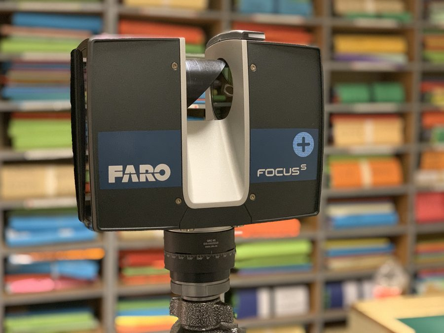
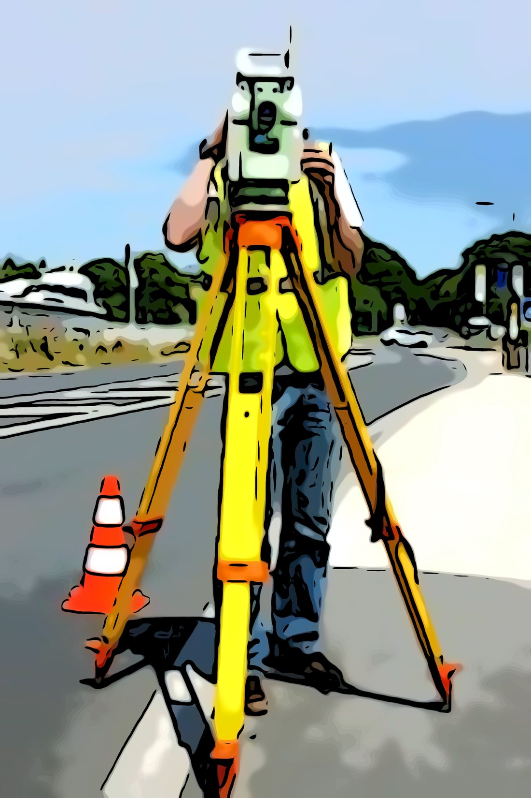
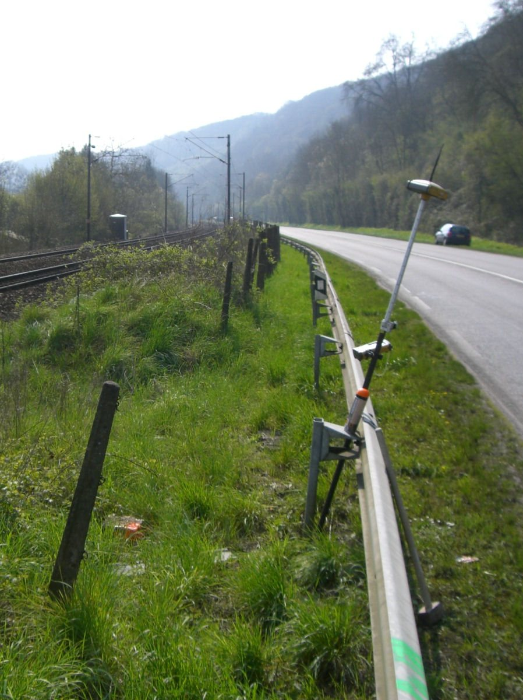
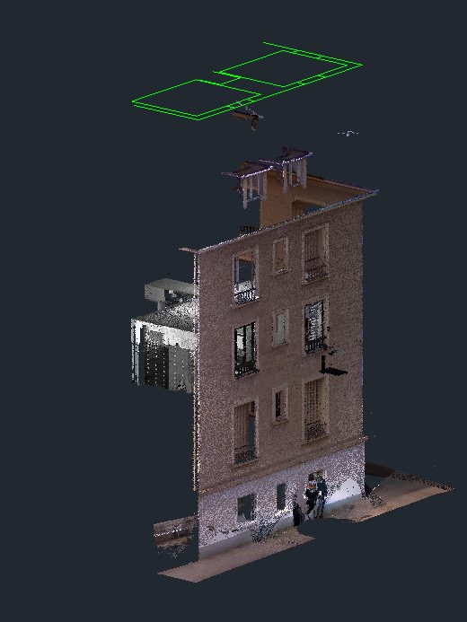

L'homme de la juste mesure
La qualité d'un plan ne se voit pas à l'œil. Elle tient au matériel, à la méthode de rattachement et aux contrôles que l'on s'impose. Chez nous, chaque levé est rattaché et contrôlé.
Le matériel du cabinet couvre l'ensemble des besoins d'un géomètre-expert : mesure angulaire et de distance au sol, positionnement par satellite, nivellement, numérisation 3D, et traitement des données au bureau.
Sur le terrain
- Scanner 3D FARO Focus PremiumLe modèle le plus récent de la gamme. Numérisation d'un local, d'une façade ou d'un ouvrage en nuage de points : des millions de points relevés en quelques minutes, sans contact. On y revient ensuite au bureau pour extraire un plan, une coupe ou une restitution 3D, sans retourner sur place.
- Trois stations totales robotiséesTachéomètres motorisés à visée automatique. Levé de détail, implantation, auscultation, mesure sans réflecteur sur les points inaccessibles. En avoir trois permet de mener plusieurs chantiers le même jour.
- Trois récepteurs GNSSPositionnement par satellite en levé comme en implantation. C'est l'outil du rattachement au système légal et du travail en terrain dégagé.
- Réseau TERIARéseau national de stations GNSS permanentes. Il fournit des corrections en temps réel et permet de travailler directement dans le système légal, avec une précision centimétrique, sans installer de station de base.
- Tablette terrain avec Land2MapLe croquis se dessine sur le terrain, au moment du levé, et non le lendemain au bureau. Moins de reprises, moins d'oublis, et un retour au cabinet déjà exploitable.
Le matériel en service



Au bureau
Les données du terrain ne valent que par le traitement qui les suit. Le cabinet assure lui-même l'ensemble de la chaîne : calcul, report, dessin, mise au net et édition des plans.
- Calcul et compensationReprise des observations, contrôle des fermetures, calcul des coordonnées et vérification des écarts avant tout dessin.
- Dessin assisté par ordinateurAutoCAD, ZWCAD et Covadis pour le plan topographique, les profils, les modèles numériques de terrain et les cubatures.
- Traitement du nuage de pointsSous FARO SCENE : recalage des scans, nettoyage, puis extraction des plans, des coupes et des élévations. Le nuage est conservé : il permet de reprendre une cote des mois plus tard sans nouvelle intervention.
- Édition et livraisonFichiers DWG et DXF pour les maîtres d'œuvre et les entreprises, PDF pour les notaires et les particuliers, et d'autres formats sur demande. Les plans de bornage sont également remis sur papier, au format et à l'échelle voulus.
- Archivage numériqueChaque dossier est conservé sous forme numérique : listings de points, croquis, calculs et plans. C'est ce qui permet de rouvrir un dossier vingt ans plus tard.
On vous a livré un nuage de points ?
Un nuage de points n'est pas un plan. C'est la matière brute du scanner : plusieurs millions de points mesurés, dans lesquels on vient ensuite chercher ce dont on a besoin.
Un fichier de nuage est lourd et ne s'ouvre pas avec une visionneuse de plans ordinaire. C'est pourquoi nous ne le livrons jamais seul : il vient toujours accompagné des plans, coupes et élévations qui en ont été extraits, aux formats habituels.
La livraison du nuage n'est pas systématique : elle se convient au moment du devis. Quand elle est prévue, le nuage est livré dans deux formats : le RCP, pour ceux qui travaillent dans l'environnement Autodesk, et le E57, format ouvert et normalisé. Le E57 s'ouvre avec CloudCompare, un logiciel libre et gratuit — vous n'avez ni licence à acheter ni abonnement à souscrire pour consulter votre nuage. Le RCP s'ouvre avec Autodesk ReCap : la version d'évaluation, gratuite pendant trente jours, continue ensuite de fonctionner sans limite de durée comme simple visionneuse.
Le nuage, lui, reste conservé au cabinet. Si une cote manque six mois plus tard, ou si le projet évolue, nous y retournons — sans remobiliser une équipe sur place.

Les questions qu'on nous pose
Quelle précision atteignez-vous ?
Elle dépend de la mission, de la nature du levé et des conditions du terrain. Sur un point de détail éloigné, sous végétation ou en milieu urbain dense, la précision se dégrade — et c'est le rôle du géomètre-expert de le dire, pas de le masquer. La précision attendue est définie et précisée au moment du devis, selon l'usage auquel le plan est destiné.
Faut-il que je sois présent pendant le levé ?
Ce n'est pas obligatoire pour un levé topographique simple. Ça l'est en revanche pour un bornage, qui est une opération contradictoire : votre présence et celle de vos voisins font partie de la procédure.
Pouvez-vous travailler à partir d'un plan que j'ai déjà ?
Oui, et c'est très souvent utile — surtout s'il s'agit d'un fichier DWG, a fortiori s'il vient d'un géomètre-expert. Envoyez-le nous avant le devis : il réduit le temps de recherche et le temps passé sur le terrain, donc le coût.
Sous quel format livrez-vous les plans ?
PDF systématiquement, et DWG ou DXF sur demande.